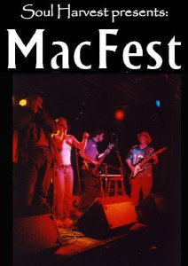

When:
Thursday, August 9th, 2001
9pm to 2:30am
Where:
Barrymore's Music Hall
323 Bank St, Ottawa, ON, Canada
How much:
$10 advance, $12 @ door
Why:
Proceeds will go to St. Joe's Women's Centre
|
WHAT IS MACFEST?
MacFEST has grown into an annual festival aimed at promoting awareness of social causes within the National Capital Region. MacFEST has, in conjunction with Canadian musical talent, brought to the forefront many non-profit organizations and movements.
The new millennium brings new motivation and an overwhelming sense of need within the community. This year, MacFEST proceeds will go to the local women’s charity St. Joes’ Women’s Centre, 151 Laurier Avenue East.. At this time, we are appealing to local businesses and corporations to aid us in raising money and awareness of “Violence against Women” in the NRC.
WHERE IS IT BEING HELD?
MacFEST will be celebrated on Thursday, August 9, 2001 at Barrymore’s Music Hall, 323 Bank Street, 9 pm to close.
WHO IS INVOLVED?
The musical line-up is yet to be announced. Currently, Soul Harvest and 106.9 the Bear are facilitating a contest, both on-line and on-air, calling for local bands to submit press kits and demos in order to play at MacFEST. Applications can be made online at http://www.soulharvest.ca
Winners of the contest will perform at MacFEST, and the first place band will also receive a studio recording package from Distortion Studios.
Elissa Lansdell, Entertainment and Weather Anchor/Ottawa personality from the NewRO will be emceeing MacFEST.
WHO IS SPONSORING THE EVENT?
Corporate donations and sponsorship are being granted by:
The Ottawa Sun (advertising promotions to be announced)
Molson Canadian (give-aways and door prizes)
106.9 the Bear (advertising on the site and on-air for the band competition, promotion of the festival, as well as door prize packages)
Distortion Studios (a recording package prize [$450 + value] for the top pick band for MacFEST)
There is also community sponsorship by individuals, and businesses, which is on going.
WHERE IS THE MONEY GOING?
MacFEST is raising funds for a local women’s charity, St. Joes’ Women’s’ Centre, 151 Laurier Street in Ottawa. All proceeds from the door/tickets sales for MacFEST will be donated to St. Joes’ Women’s’ Centre.
More information will be announced in the coming months, so keep coming back to find out more or drop us a line and join Soul Harvest's mailing list!
|